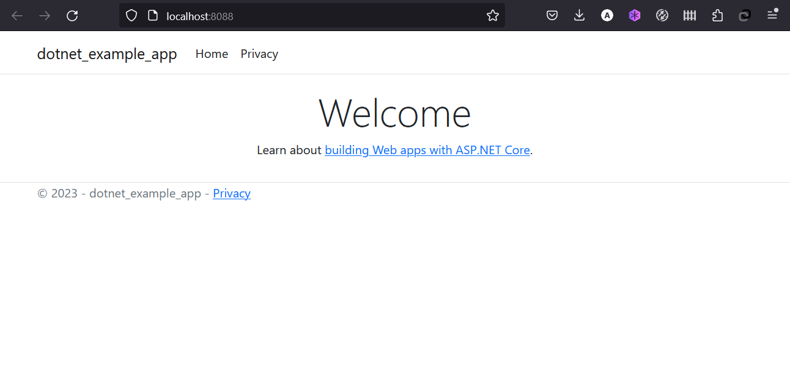

Running our first App¶
For the rest of this tutorial, we will be working with a simple dotnet core asp app written in C#. If you're not familiar with C#, don't worry! No real C# experience is needed!
At this point, your development team is quite small and you're simply building an app to prove out your MVP (minimum viable product). You want to show how it works and what it's capable of doing without needing to think about how it will work for a large team, multiple developers, etc.
Getting the App - dotnet-example-app¶
Before we can run the application, we need to get the application source code onto our machine. For real projects, you will typically clone the repo. But, for this tutorial, we have created a ZIP file containing the application.
-
Clone the application source code from github https://github.com/fintech-ye/dotnet-example-app
bash git clone https://github.com/fintech-ye/dotnet-example-app
Note: If you can't get access to the repository, please contact me at: alaghbri.mohammed@gmail.com
Building the App's Container Image¶
In order to build the application, we need to use a Dockerfile. A
Dockerfile is simply a text-based script of instructions that is used to
create a container image. If you've created Dockerfiles before, you might
see a few flaws in the Dockerfile below. But, don't worry! We'll go over them.
-
Create a file named
Dockerfilein the same folder as the fileProgram.cswith the following contents.```dockerfile FROM mcr.microsoft.com/dotnet/sdk:7.0 AS build-env WORKDIR /dotnet-example-app
Copy everything¶
COPY . ./
Restore as distinct layers¶
RUN dotnet restore
Build and publish a release¶
RUN dotnet publish -c Release -o out
Build runtime image¶
FROM mcr.microsoft.com/dotnet/aspnet:7.0 WORKDIR /dotnet-example COPY --from=build-env /dotnet-example-app/out .
EXPOSE 80
ENTRYPOINT ["dotnet", "dotnet-example-app.dll"] ```
Please check that the file
Dockerfilehas no file extension like.txt. Some editors may append this file extension automatically and this would result in an error in the next step. -
If you haven't already done so, open a terminal and go to the
appdirectory with theDockerfile. Now build the container image using thedocker buildcommand.bash docker build -t dotnet-example-app .This command used the Dockerfile to build a new container image. You might have noticed that a lot of "layers" were downloaded. This is because we instructed the builder that we wanted to start from the images
mcr.microsoft.com/dotnet/sdk:7.0andmcr.microsoft.com/dotnet/aspnet:7.0. But, since we didn't have that on our machine, that image needed to be downloaded.After the images were downloaded, we copied in our application and used
dotnetcommand to install our application's dependencies. TheCMDdirective specifies the default command to run when starting a container from this image.Finally, the
-tflag tags our image. Think of this simply as a human-readable name for the final image. Since we named the imagedotnet-example-app, we can refer to that image when we run a container.The
.at the end of thedocker buildcommand tells that Docker should look for theDockerfilein the current directory.
Starting an App Container¶
Now that we have an image, let's run the application! To do so, we will use the docker run
command.
-
Start your container using the
docker runcommand and specify the name of the image we just created:bash docker run --name=dotnet-example-app -d -p 8088:80 dotnet-example-appRemember the
-dand-pflags? We're running the new container in "detached" mode (in the background) and creating a mapping between the host's port 8088 to the container's port 80. Without the port mapping, we wouldn't be able to access the application. -
After a few seconds, open your web browser to http://localhost:8088. You should see our app!

-
Go ahead and add an item or two and see that it works as you expect. You can mark items as complete and remove items. Your frontend is successfully storing items in the backend! Pretty quick and easy, huh?
At this point, you should have a running todo list manager with a few items, all built by you! Now, let's make a few changes and learn about managing our containers.
If you take a quick look at the Docker Dashboard, you should see your two containers running now (this tutorial and your freshly launched app container)!

Recap¶
In this short section, we learned the very basics about building a container image and created a Dockerfile to do so. Once we built an image, we started the container and saw the running app!
Next, we're going to make a modification to our app and learn how to update our running application with a new image. Along the way, we'll learn a few other useful commands.